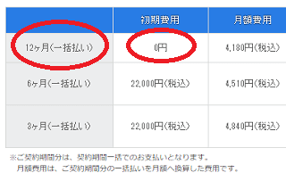
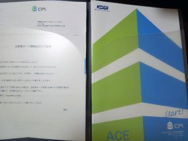
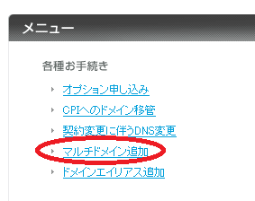
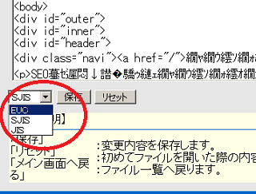

KDDI系列で信頼性の高いCPIレンタルサーバー
CPIは法人利用率90%以上のKDDIグループのホスティングサービスです。
ウェブとメールが別サーバーで運用されているため、万一、ウェブ領域で障害が発生してもメール領域には影響されず、アクセス数の多い企業サイトでも安心して運用することができます。
KDDI系列のCPIは20年以上の運用実績があり、公官庁から大手企業まで多くのビジネスユーザーが導入しているため、信頼性の高い法人向けレンタルサーバーとして定評があります。
共有レンタルサーバーの料金プラン「SV-Basic」
共有レンタルサーバーは「シェアードプラン」になりますが、2019年9月5日に以前までのACEシリーズ「ACE01」がリニューアルされ、「SV-Basic」が新登場しています。
コントロールパネルが刷新されており、主契約ドメイン1枚分のSSL証明書が無料提供されるなど以前よりも使いやすくなりました。加えて、ウェブとメールがそれぞれ別サーバーに分離されており、トラフィックによる影響を互いに受けない仕様になっています。
専用サーバーのプランもありますが、共有サーバーについては「SV-Basic」プランを選択されるとよいでしょう。
■月額料金と初期費用
「SV-Basic」の最低契約期間は「3ヶ月、6ヶ月、12ヶ月」のいずれかです。12ヶ月一括払いの場合は50,160円（税込）で初期費用はかかりませんが、3ヶ月払いや6ヶ月払いの場合は初期費用で22,000円（税込）が別途にかかります。
そのため、12ヶ月分を一括で払ってしまった方がよいでしょう。

ちなみに、年間一括払いの場合ですと月額換算で4,180円（税込）になります。
■申込みのタイミング
FAQによると、契約開始日は「サーバーの設定日」により1日か15日のどちらかになります。
当サイト運営者の場合、6月23日に10日間の無料お試しの申込みをして「サーバーの設定日」が同日の23日となりました。そして翌日の24日に1年分の料金を支払って契約しましたが、契約開始日は7月1日、契約終了日が翌年6月30日となっていました。
サポートに確認したわけではないため詳細は不明ですが、おそらく「サーバー設定日」の次の1日か15日が契約開始日になるかと思います。そのため、2日とか16日とか、そのあたりに無料お試しの申込みをされるとよいかもしれません。
いずれにしても申し込んだ契約期間分はまるまる確保されるため、いつ申込みをしてもそれほど大した違いはないかと思います。
CPIでの独自ドメインの設定方法
10日間の無料お試しを申し込むと、まずは「主契約ドメイン」を設定することになりますが、2015年8月12日からは日本語ドメインにも対応しています。マルチドメインについては契約した後に設定されるとよいでしょう。
管理画面はテストサイト用の機能などもあり、多少は複雑になってはいますが、サーバー設定の手順が書いてあるマニュアルがPDFで用意されていますので、最初にそちらを参照されることをおすすめします。
契約後、紙でのマニュアルも送付されてきましたが、ネット上のPDFとほぼ同じ内容でした。

当サイト運営者はテストサイトは使わず、直接公開サイト用にアップロードしましたが、法人サイトで事前に確認したい場合にはテストサイトを利用されることをおすすめします。
■マルチドメイン機能
無料お試し期間中はマルチドメインを使用できませんが、契約が完了すると使用できます。マルチドメインの追加設定可能数はシェアードプラン「SV-Basic」で「10個」までとなっています。
→ マルチドメイン対応のレンタルサーバーとは？

ドメイン追加を申し込んだ際、設定が完了されるまでにある程度の時間がかかりますが、当サイト運営者の場合はたいてい翌日中には設定されました。
似たような機能に「ドメインエイリアス」もありますが、こちらは複数のドメインで同じサイトを表示するための機能のため、ほとんど使用することはないかもしれません。複数のサイトを構築する際はマルチドメインを利用するとよいでしょう。
■SSL証明書
主契約ドメイン1枚分について、無料のCPI SSLを利用することができます。マルチドメインのSSLについては有料オプションとなっています。
「無料お試し期間中はマルチドメイン、SSLサーバー証明書を含め、各種オプションはご利用いただけません。」との記載があるため、契約後に設定されるとよいでしょう。
ファイルマネージャー機能について
ファイルマネージャーも付属してましたが、古いタイプのようで、ウェブ上での直接編集にはあまり使えないかもしれません。現在は文字コードをUTF-8に設定しているサイトが多いと思いますが、対応する文字コードが「shift jis」や「euc-jp」しかなく、文字化けするようです。

ファイルのアップロードや削除するだけならよいとは思いますが、直接ファイルマネージャーで編集して更新する場合はあまり実用性がないと思います。
法人サイトの場合、CMSやDreamweaverなど何らかのホームページ作成ソフトを使用するかと思いますので、こちらのファイルマネージャー機能は特に利用することはないかもしれません。
法人向けレンタルサーバー一覧
- お名前.comサーバー （GMOグループ）
- エックスサーバービジネス （当サイトはこちらを利用中）
- ニフクラ レンタルサーバー （富士通グループ）
- ＣＰＩ （KDDIグループ）
- アルファメール （大塚商会）
- iCLUSTA+ （長年の運用実績）
- グーペ （お店向け・個人事業、法人）
- カゴヤ （自社所有データセンター）